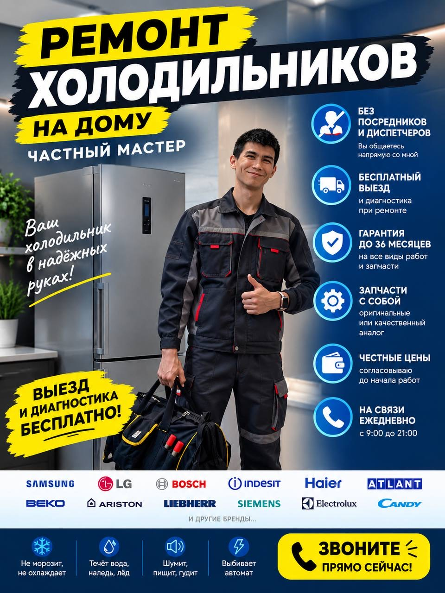

Руководитель FROST UFA
Ринат Нуркаев
Мастер по ремонту бытовых холодильников · Опыт 8 лет

О себе
Меня зовут Ринат Нуркаев. Я руководитель FROST UFA и мастер по ремонту бытовых холодильников. В профессии — 8 лет.
По образованию я программист: окончил вуз, но всерьёз заинтересовался ремонтом холодильников. Захотел разобраться, как устроена техника и почему она выходит из строя. Прошёл профильные курсы, получил грамоты и закрепил знания на практике.
За эти годы набрался опыта в ремонте домашних холодильников и бытового оборудования. Для меня важно найти причину поломки, понятно объяснить её владельцу и согласовать работы до начала ремонта.
8 лет практического опытаВысшее образование: программированиеРемонт бытовых холодильников
Грамоты и документы об обучении
Прошёл профильные курсы и получил грамоты.
Сканы документов будут добавлены позже.
Нужна помощь с холодильником?
Расскажите о технике и поломке — обсудим выезд.